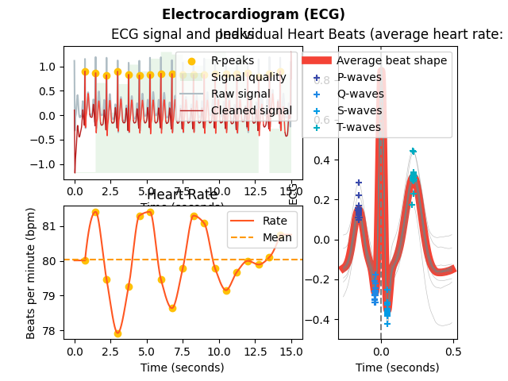
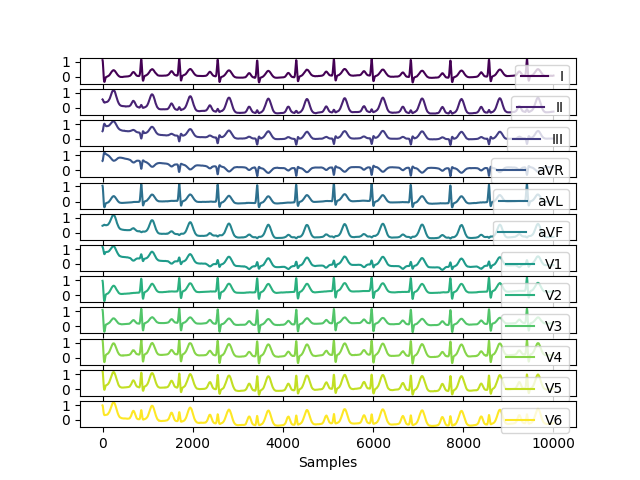
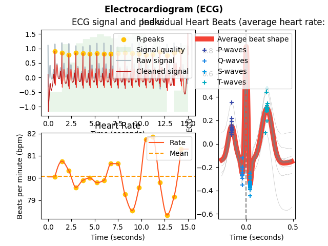
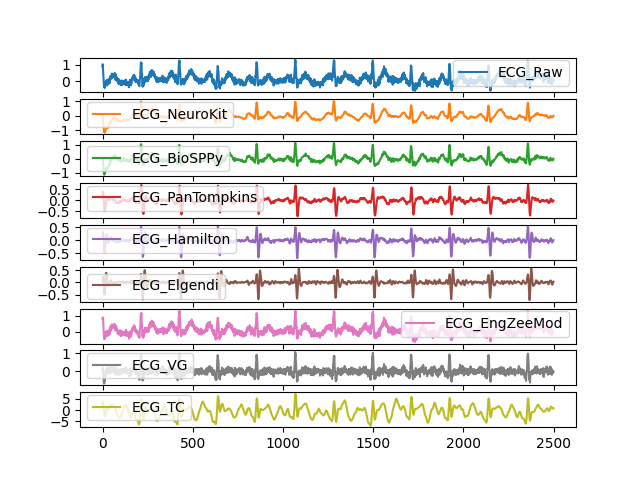
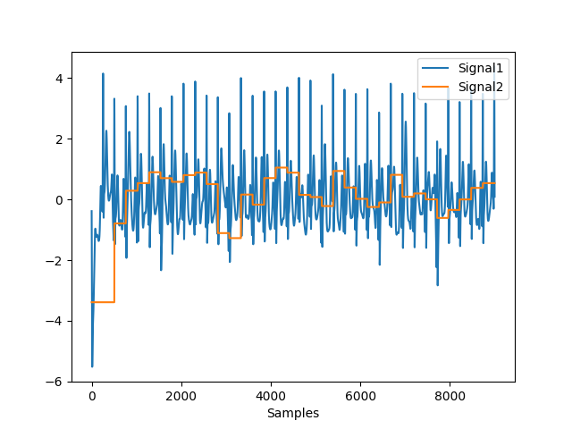

ECG
Contents
ECG#
Main#
ecg_process()#
- ecg_process(ecg_signal, sampling_rate=1000, method='neurokit')#
Automated pipeline for preprocessing an ECG signal
This function runs different preprocessing steps. Help us improve the documentation of this function by making it more tidy and useful!
- Parameters
ecg_signal (Union[list, np.array, pd.Series]) – The raw ECG channel.
sampling_rate (int) – The sampling frequency of ecg_signal (in Hz, i.e., samples/second). Defaults to 1000.
method (str) – The processing pipeline to apply. Defaults to “neurokit”.
- Returns
signals (DataFrame) – A DataFrame of the same length as the ecg_signal containing the following columns:
"ECG_Raw": the raw signal."ECG_Clean": the cleaned signal."ECG_R_Peaks": the R-peaks marked as “1” in a list of zeros."ECG_Rate": heart rate interpolated between R-peaks."ECG_P_Peaks": the P-peaks marked as “1” in a list of zeros"ECG_Q_Peaks": the Q-peaks marked as “1” in a list of zeros ."ECG_S_Peaks": the S-peaks marked as “1” in a list of zeros."ECG_T_Peaks": the T-peaks marked as “1” in a list of zeros."ECG_P_Onsets": the P-onsets marked as “1” in a list of zeros."ECG_P_Offsets": the P-offsets marked as “1” in a list of zeros (only when method inecg_delineate()is wavelet)."ECG_T_Onsets": the T-onsets marked as “1” in a list of zeros (only when method inecg_delineate()is wavelet)."ECG_T_Offsets": the T-offsets marked as “1” in a list of zeros."ECG_R_Onsets": the R-onsets marked as “1” in a list of zeros (only when method inecg_delineate()is wavelet)."ECG_R_Offsets": the R-offsets marked as “1” in a list of zeros (only when method inecg_delineate()is wavelet)."ECG_Phase_Atrial": cardiac phase, marked by “1” for systole and “0” for diastole."ECG_Phase_Ventricular": cardiac phase, marked by “1” for systole and “0” for diastole."ECG_Atrial_PhaseCompletion": cardiac phase (atrial) completion, expressed in percentage (from 0 to 1), representing the stage of the current cardiac phase."ECG_Ventricular_PhaseCompletion": cardiac phase (ventricular) completion, expressed in percentage (from 0 to 1), representing the stage of the current cardiac phase.This list is not up-to-date. Help us improve the documentation!
info (dict) – A dictionary containing the samples at which the R-peaks occur, accessible with the key “ECG_Peaks”, as well as the signals’ sampling rate.
Examples
In [1]: import neurokit2 as nk # Simulate ECG signal In [2]: ecg = nk.ecg_simulate(duration=15, sampling_rate=1000, heart_rate=80) # Preprocess ECG signal In [3]: signals, info = nk.ecg_process(ecg, sampling_rate=1000) # Visualize In [4]: nk.ecg_plot(signals) Out[4]: <Figure size 640x480 with 2 Axes>
{kind=link}
ecg_analyze()#
- ecg_analyze(data, sampling_rate=1000, method='auto')#
Automated Analysis ECG
Performs ECG analysis by computing relevant features and indices on either epochs (event-related analysis) or on longer periods of data (interval-related analysis), such as resting-state data.
- Parameters
data (Union[dict, pd.DataFrame]) – A dictionary of epochs, containing one DataFrame per epoch, usually obtained via epochs_create(), or a DataFrame containing all epochs, usually obtained via epochs_to_df(). Can also take a DataFrame of processed signals from a longer period of data, typically generated by ecg_process() or bio_process(). Can also take a dict containing sets of separate periods of data.
sampling_rate (int) – The sampling frequency of the signal (in Hz, i.e., samples/second). Defaults to 1000Hz.
method (str) – Can be one of
'event-related'for event-related analysis on epochs, or'interval-related'for analysis on longer periods of data. Defaults to'auto', where the method will be chosen based on the mean duration of the data (‘event-related’ for duration under 10s).
- Returns
DataFrame – A dataframe containing the analyzed ECG features. If event-related analysis is conducted, each epoch is indicated by the
Labelcolumn. Seeecg_eventrelated()andecg_intervalrelated()docstrings for details.
See also
bio_process,ecg_process,epochs_create,ecg_eventrelated,ecg_intervalrelatedExamples
Example 1: Event-related analysis
In [1]: import neurokit2 as nk # Download the data In [2]: data = nk.data("bio_eventrelated_100hz") # Process the data for event-related analysis In [3]: df, info = nk.bio_process(ecg=data["ECG"], sampling_rate=100) In [4]: events = nk.events_find(data["Photosensor"], threshold_keep='below', ...: event_conditions=["Negative", "Neutral", "Neutral", "Negative"]) ...: In [5]: epochs = nk.epochs_create(df, events, sampling_rate=100, epochs_start=-0.1, epochs_end=1.9) # Analyze In [6]: analyze_epochs = nk.ecg_analyze(epochs, sampling_rate=100) # Get a dataframe with all the results In [7]: analyze_epochs Out[7]: Label Condition ... ECG_Phase_Completion_Ventricular ECG_Quality_Mean 1 1 Negative ... 0.400000 0.821619 2 2 Neutral ... 0.553846 0.907924 3 3 Neutral ... 0.133333 0.825420 4 4 Negative ... 0.575342 0.802749 [4 rows x 18 columns]
Example 2: Interval-related analysis
In [8]: import neurokit2 as nk # Download the resting-state data In [9]: data = nk.data("bio_resting_5min_100hz") # Process the data In [10]: df, info = nk.ecg_process(data["ECG"], sampling_rate=100) # Analyze In [11]: analyze_df = nk.ecg_analyze(df, sampling_rate=100) # Get results In [12]: analyze_df Out[12]: ECG_Rate_Mean HRV_MeanNN HRV_SDNN ... HRV_HFD HRV_KFD HRV_LZC 0 86.392105 694.756381 49.036043 ... 1.917341 2.722348 0.873124 [1 rows x 82 columns]
ecg_simulate()#
- ecg_simulate(duration=10, length=None, sampling_rate=1000, noise=0.01, heart_rate=70, heart_rate_std=1, method='ecgsyn', random_state=None, **kwargs)#
Simulate an ECG/EKG signal.
Generate an artificial (synthetic) ECG signal of a given duration and sampling rate using either the ECGSYN dynamical model (McSharry et al., 2003) or a simpler model based on Daubechies wavelets to roughly approximate cardiac cycles.
- Parameters
duration (int) – Desired recording length in seconds.
sampling_rate (int) – The desired sampling rate (in Hz, i.e., samples/second).
length (int) – The desired length of the signal (in samples).
noise (float) – Noise level (amplitude of the laplace noise).
heart_rate (int) – Desired simulated heart rate (in beats per minute). The default is 70. Note that for the ECGSYN method, random fluctuations are to be expected to mimick a real heart rate. These fluctuations can cause some slight discrepancies between the requested heart rate and the empirical heart rate, especially for shorter signals.
heart_rate_std (int) – Desired heart rate standard deviation (beats per minute).
method (str) – The model used to generate the signal. Can be ‘simple’ for a simulation based on Daubechies wavelets that roughly approximates a single cardiac cycle. If ‘ecgsyn’ (default), will use the model desbribed McSharry et al. (2003). If ‘multileads’, will return a DataFrame containing 12-leads (see 12-leads ECG simulation).
random_state (int) – Seed for the random number generator.
**kwargs – Other keywords parameters for ECGSYN algorithm, such as lfhfratio, ti, ai, bi.
- Returns
array – Vector containing the ECG signal.
Examples
Example 1: Simulate single lead ECG
In [1]: import pandas as pd In [2]: import neurokit2 as nk In [3]: ecg1 = nk.ecg_simulate(duration=10, method="simple") In [4]: ecg2 = nk.ecg_simulate(duration=10, method="ecgsyn") # Visualize result In [5]: pd.DataFrame({"ECG_Simple": ecg1, ...: "ECG_Complex": ecg2}).plot(subplots=True) ...: Out[5]: array([<AxesSubplot:>, <AxesSubplot:>], dtype=object)

Example 2: Simulate 12-leads ECG
In [6]: ecg12 = nk.ecg_simulate(duration=10, method="multileads") # Visualize result In [7]: ecg12[0:10000].plot(subplots=True) Out[7]: array([<AxesSubplot:>, <AxesSubplot:>, <AxesSubplot:>, <AxesSubplot:>, <AxesSubplot:>, <AxesSubplot:>, <AxesSubplot:>, <AxesSubplot:>, <AxesSubplot:>, <AxesSubplot:>, <AxesSubplot:>, <AxesSubplot:>], dtype=object)
See also
rsp_simulate,eda_simulate,ppg_simulate,emg_simulateReferences
McSharry, P. E., Clifford, G. D., Tarassenko, L., & Smith, L. A. (2003). A dynamical model for generating synthetic electrocardiogram signals. IEEE transactions on biomedical engineering, 50 (3), 289-294.
{kind=link}
ecg_plot()#
- ecg_plot(ecg_signals, rpeaks=None, sampling_rate=None, show_type='default')#
Visualize ECG data
Plot ECG signals and R-peaks.
- Parameters
ecg_signals (DataFrame) – DataFrame obtained from
ecg_process().rpeaks (dict) – The samples at which the R-peak occur. Dict returned by
`ecg_process()`. Defaults to None.sampling_rate (int) – The sampling frequency of the ECG (in Hz, i.e., samples/second). Needs to be supplied if the data should be plotted over time in seconds. Otherwise the data is plotted over samples. Defaults to None. Must be specified to plot artifacts.
show_type (str) – Visualize the ECG data with
'default'or visualize artifacts thresholds with'artifacts'produced byecg_fixpeaks(), or'full'to visualize both.
- Returns
fig – Figure representing a plot of the processed ecg signals (and peak artifacts).
Examples
In [1]: import neurokit2 as nk In [2]: ecg = nk.ecg_simulate(duration=15, sampling_rate=1000, heart_rate=80) In [3]: signals, info = nk.ecg_process(ecg, sampling_rate=1000) In [4]: nk.ecg_plot(signals, sampling_rate=1000, show_type='default') Out[4]: <Figure size 640x480 with 3 Axes>
See also
{kind=link}
Preprocessing#
ecg_clean()#
- ecg_clean(ecg_signal, sampling_rate=1000, method='neurokit', **kwargs)#
ECG Signal Cleaning
Clean an ECG signal to remove noise and improve peak-detection accuracy. Different cleaning method are implemented.
'neurokit'(default): 0.5 Hz high-pass butterworth filter (order = 5), followed by powerline filtering (seesignal_filter()). By default,powerline = 50.'biosppy': Same as in the biosppy package. Please help providing a better description!'pantompkins1985': Method used in Pan & Tompkins (1985). Please help providing a better description!'hamilton2002': Method used in Hamilton (2002). Please help providing a better description!'elgendi2010': Method used in Elgendi et al. (2010). Please help providing a better description!'engzeemod2012': Method used in Engelse & Zeelenberg (1979). Please help providing a better description!
- Parameters
ecg_signal (Union[list, np.array, pd.Series]) – The raw ECG channel.
sampling_rate (int) – The sampling frequency of ecg_signal (in Hz, i.e., samples/second). Defaults to 1000.
method (str) – The processing pipeline to apply. Can be one of
'neurokit'(default),'biosppy','pantompkins1985','hamilton2002','elgendi2010','engzeemod2012'.**kwargs – Other arguments to be passed to specific methods.
- Returns
array – Vector containing the cleaned ECG signal.
See also
ecg_peaks,ecg_process,ecg_plot,signal_rate,signal_filterExamples
In [1]: import pandas as pd In [2]: import neurokit2 as nk In [3]: import matplotlib.pyplot as plt In [4]: ecg = nk.ecg_simulate(duration=10, sampling_rate=1000) In [5]: signals = pd.DataFrame({"ECG_Raw" : ecg, ...: "ECG_NeuroKit" : nk.ecg_clean(ecg, sampling_rate=1000, method="neurokit"), ...: "ECG_BioSPPy" : nk.ecg_clean(ecg, sampling_rate=1000, method="biosppy"), ...: "ECG_PanTompkins" : nk.ecg_clean(ecg, sampling_rate=1000, method="pantompkins1985"), ...: "ECG_Hamilton" : nk.ecg_clean(ecg, sampling_rate=1000, method="hamilton2002"), ...: "ECG_Elgendi" : nk.ecg_clean(ecg, sampling_rate=1000, method="elgendi2010"), ...: "ECG_EngZeeMod" : nk.ecg_clean(ecg, sampling_rate=1000, method="engzeemod2012")}) ...: In [6]: signals.plot() Out[6]: <AxesSubplot:>
References
Engelse, W. A., & Zeelenberg, C. (1979). A single scan algorithm for QRS-detection and feature extraction. Computers in cardiology, 6(1979), 37-42.
Pan, J., & Tompkins, W. J. (1985). A real-time QRS detection algorithm. IEEE transactions on biomedical engineering, (3), 230-236.
Hamilton, P. (2002). Open source ECG analysis. In Computers in cardiology (pp. 101-104). IEEE.
Elgendi, M., Jonkman, M., & De Boer, F. (2010). Frequency Bands Effects on QRS Detection. Biosignals, Proceedings of the Third International Conference on Bio-inspired Systems and Signal Processing, 428-431.
{kind=link}
ecg_quality()#
- ecg_quality(ecg_cleaned, rpeaks=None, sampling_rate=1000, method='averageQRS', approach=None)#
ECG Signal Quality Assessment
Assess the quality of the ECG Signal using various methods:
The
"averageQRS"method computes a continuous index of quality of the ECG signal, by interpolating the distance of each QRS segment from the average QRS segment present in the * data. This index is therefore relative: 1 corresponds to heartbeats that are the closest to the average sample and 0 corresponds to the most distant heartbeat from that average sample. Note that 1 does not necessarily means “good”: if the majority of samples are bad, than being close to the average will likely mean bad as well. Use this index with care and plot it alongside your ECG signal to see if it makes sense.The
"zhao2018"method (Zhao et al., 2018) extracts several signal quality indexes (SQIs): QRS wave power spectrum distribution pSQI, kurtosis kSQI, and baseline relative power basSQI. An additional R peak detection match qSQI was originally computed in the paper but left out in this algorithm. The indices were originally weighted with a ratio of [0.4, 0.4, 0.1, 0.1] to generate the final classification outcome, but because qSQI was dropped, the weights have been rearranged to [0.6, 0.2, 0.2] for pSQI, kSQI and basSQI respectively.
- Parameters
ecg_cleaned (Union[list, np.array, pd.Series]) – The cleaned ECG signal in the form of a vector of values.
rpeaks (tuple or list) – The list of R-peak samples returned by ecg_peaks(). If None, peaks is computed from the signal input.
sampling_rate (int) – The sampling frequency of the signal (in Hz, i.e., samples/second).
method (str) – The method for computing ECG signal quality, can be “averageQRS” (default) or “zhao2018”.
approach (str) – The data fusion approach as documented in Zhao et al. (2018). Can be “simple” or “fuzzy”. The former performs simple heuristic fusion of SQIs and the latter performs fuzzy comprehensive evaluation. If None (default), simple heuristic fusion is used.
**kwargs – Keyword arguments to be passed to signal_power() in the computation of basSQI and pSQI.
- Returns
array or str – Vector containing the quality index ranging from 0 to 1 for “averageQRS” method, returns string classification (“Unacceptable”, “Barely Acceptable” or “Excellent”) of the signal for “zhao2018 method”.
See also
ecg_segment,ecg_delineateReferences
Zhao, Z., & Zhang, Y. (2018). “SQI quality evaluation mechanism of single-lead ECG signal based on simple heuristic fusion and fuzzy comprehensive evaluation”. Frontiers in Physiology, 9, 727.
Examples
Example 1: ‘averageQRS’ method
In [1]: import neurokit2 as nk In [2]: ecg = nk.ecg_simulate(duration=30, sampling_rate=300, noise=0.2) In [3]: ecg_cleaned = nk.ecg_clean(ecg, sampling_rate=300) In [4]: quality = nk.ecg_quality(ecg_cleaned, sampling_rate=300) In [5]: nk.signal_plot([ecg_cleaned, quality], standardize=True)
Example 2: Zhao et al. (2018) method
In [6]: nk.ecg_quality(ecg_cleaned, ...: sampling_rate=300, ...: method="zhao2018", ...: approach="fuzzy") ...: Out[6]: 'Barely acceptable'
{kind=link}
ecg_rsp()#
- ecg_rsp(ecg_rate, sampling_rate=1000, method='vangent2019')#
ECG-Derived Respiration (EDR)
Extract ECG-Derived Respiration (EDR), a proxy of a respiratory signal based on heart rate. * Note that this implementation is far from being complete, as the information in the related papers prevents me from getting a full understanding of the procedure. Help is required to document, test and validate the function!
- Parameters
ecg_rate (array) – The heart rate signal as obtained via ecg_rate().
sampling_rate (int) – The sampling frequency of the signal that contains the R-peaks (in Hz, i.e., samples/second). Defaults to 1000Hz.
method (str) – Can be one of
'vangent2019'(default),'soni2019','charlton2016'or'sarkar2015'.
- Returns
array – A Numpy array containing the derived respiratory rate.
Examples
Example 1: Compare to real RSP signal
In [1]: import neurokit2 as nk # Get heart rate In [2]: data = nk.data("bio_eventrelated_100hz") In [3]: rpeaks, info = nk.ecg_peaks(data["ECG"], sampling_rate=100) In [4]: ecg_rate = nk.signal_rate(rpeaks, sampling_rate=100, desired_length=len(rpeaks)) # Get ECG Derived Respiration (EDR) and add to the data In [5]: data["EDR"] = nk.ecg_rsp(ecg_rate, sampling_rate=100) # Visualize result In [6]: nk.signal_plot([data["RSP"], data["EDR"]], standardize = True)

Example 2: Methods comparison
In [7]: data["vangent2019"] = nk.ecg_rsp(ecg_rate, sampling_rate=100, method="vangent2019") In [8]: data["sarkar2015"] = nk.ecg_rsp(ecg_rate, sampling_rate=100, method="sarkar2015") In [9]: data["charlton2016"] = nk.ecg_rsp(ecg_rate, sampling_rate=100, method="charlton2016") In [10]: data["soni2019"] = nk.ecg_rsp(ecg_rate, sampling_rate=100, method="soni2019") # Visualize results In [11]: nk.signal_plot([data["RSP"], data["vangent2019"], data["sarkar2015"], ....: data["charlton2016"], data["soni2019"]], standardize = True) ....:

References
van Gent, P., Farah, H., van Nes, N., & van Arem, B. (2019). HeartPy: A novel heart rate algorithm for the analysis of noisy signals. Transportation research part F: traffic psychology and behaviour, 66, 368-378.
Sarkar, S., Bhattacherjee, S., & Pal, S. (2015). Extraction of respiration signal from ECG for respiratory rate estimation.
Charlton, P. H., Bonnici, T., Tarassenko, L., Clifton, D. A., Beale, R., & Watkinson, P. J. (2016). An assessment of algorithms to estimate respiratory rate from the electrocardiogram and photoplethysmogram. Physiological measurement, 37(4), 610.
Soni, R., & Muniyandi, M. (2019). Breath rate variability: a novel measure to study the meditation effects. International Journal of Yoga, 12(1), 45.
Miscellaneous#
ecg_segment()#
- ecg_segment(ecg_cleaned, rpeaks=None, sampling_rate=1000, show=False)#
Segment an ECG signal into single heartbeats
Segment an ECG signal into single heartbeats. Convenient for visualizing all the heart beats.
- Parameters
ecg_cleaned (Union[list, np.array, pd.Series]) – The cleaned ECG channel as returned by
ecg_clean().rpeaks (dict) – The samples at which the R-peaks occur. Dict returned by
ecg_peaks(). Defaults to None.sampling_rate (int) – The sampling frequency of ecg_signal (in Hz, i.e., samples/second). Defaults to 1000.
show (bool) – If
True, will return a plot of heartbeats. Defaults toFalse.
- Returns
dict – A dict containing DataFrames for all segmented heartbeats.
Examples
In [1]: import neurokit2 as nk In [2]: ecg = nk.ecg_simulate(duration=15, sampling_rate=1000, heart_rate=80, noise = 0.05) In [3]: qrs_epochs = nk.ecg_segment(ecg, rpeaks=None, sampling_rate=1000, show=True)